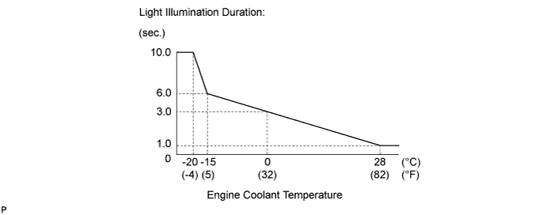
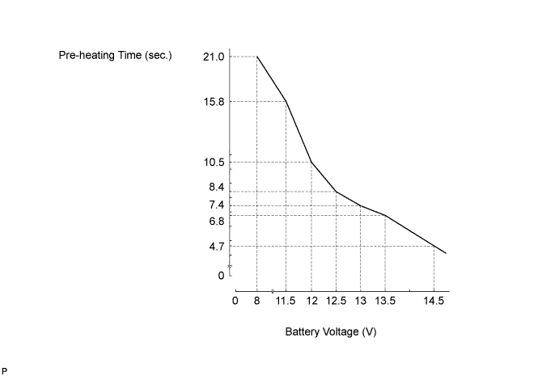
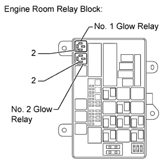
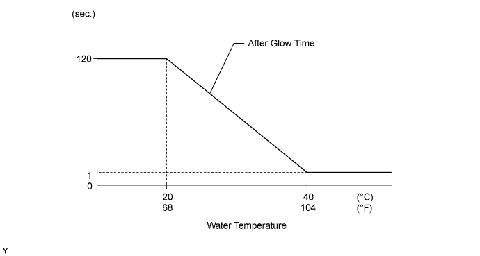

PRE-HEATING SYSTEM > ON-VEHICLE INSPECTION |
| 1. CHECK ILLUMINATION DURATION OF GLOW INDICATOR LIGHT |
Check the light illumination duration.

Turn the engine switch on (IG) and measure the light illumination duration.
Turn the engine switch off.
| 2. CHECK PRE-HEATING |
Inspect the pre-heating time.

Turn the engine switch on (IG). Measure how long it takes for the battery voltage to be applied to the glow plugs.
| Engine Coolant Temperature | Specified Condition |
| 40°C (104°F) or higher | 1 second |
| Below 40°C (104°F) | See graph* (Maximum: 21 seconds) |
Turn the engine switch off.
| 3. CHECK AFTER GLOW TIME |
 |
Remove the No. 1 glow relay (GLOW 1) from the engine room relay block.
Remove the No. 2 glow relay (GLOW 2) from the engine room relay block.
After the engine starts, measure the time duration that battery voltage remains present.
| Tester Connection | Condition | Specified Condition |
| 2 - Body ground | After engine starts | Refer to graph below |
| 2 - Body ground |
